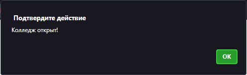
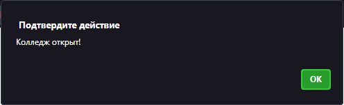
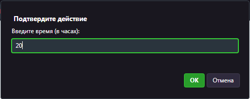
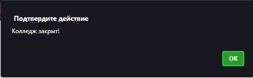

4.3 Условные опраторы. Практическое задание
Задача: Напишите программу, которая будет проверять вводимый вами время в часах, и выведет, закрыто или открыто в данное время Колледж Оникс.
Используйте логические операторы и условный оператор "if"
Примеры выполнения:
 

 
Сохраните файл в вашей личной папке